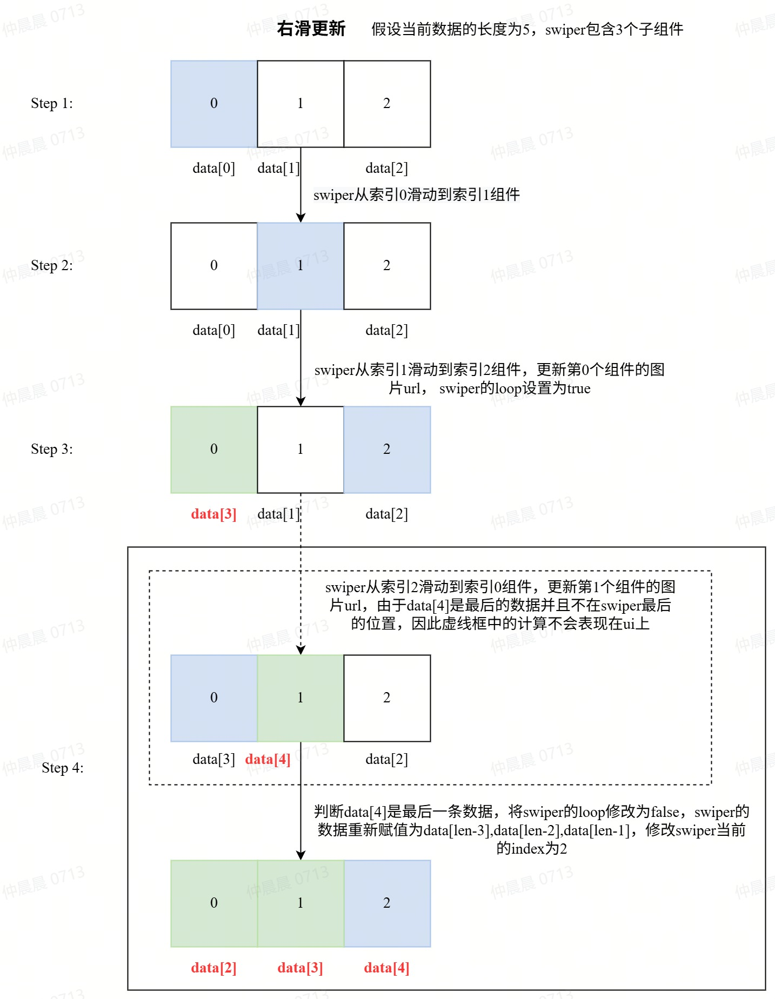

# 常用业务优化
# list与长文案优化
说明
list过长以及长文案（例如大段的隐私协议，用户协议）显示时，所能用到的优化手段
list
list列表，在初始化渲染时，原则上，如果内容超过10条，建议使用分页式渲染，或是触底发送请求新的数据，切勿初始化渲染大量数据，会造成页面渲染卡顿。
长文案
长文案一般是需要在小的设备屏幕上显示大量的文字内容，例如“用户协议”，“隐私协议”，“未成年人保护协议”等等
- 通常建议是用二维码显示协议链接，通过扫码在手机上浏览也是一种比较常用的设计。
- 如果产品需要一次性全量渲染，会一定程度上造成页面的渲染卡顿，影响首次渲染的用户体验，这里推荐的是分块渲染文案。下面是代码示例：
<!-- 渲染文案的区域,同时绑定handleScroll滚动监听 -->
<template>
<scroll id="scroll" scroll-y="true" class="scroll" onscroll="handleScroll">
<div id="content" class="connent">
<block if="{{currentKey >= 0}}">
<text class="header-1">{{contentArray[0]}}</text>
</block>
<block if="{{currentKey >= 1}}">
<text class="header-1">{{contentArray[1]}}</text>
</block>
<block if="{{currentKey >= 2}}">
<text class="header-1">{{contentArray[2]}}</text>
</block>
</div>
</scroll>
</template>
<!-- 把文案内容以数组形式保存，并记录当前所渲染的文案的序列号 -->
<script>
export default {
data:{
contentArray:[
{
content:'文案一..........'
},
{
content:'文案二..........'
},
{
content:'文案三..........'
}
],
//当前所需所渲染到的文案序列号
currentKey:0,
//当前总高度
currentTHEight:0,
}
//onReady时先给当前总高度赋一次值
onReady(){
this.$element('content').getBoundingClientRect({
success: (data) => {
const { height } = data;
this.currentTHEight = height
}
})
}
//实时判断滚动高度与总体高度，如果快触底了，则进行下一个文案的加载,同时给总高度重新赋值
handleScroll(e) {
if(currentTHEight - e.scrollY <40){
this.currentKey = currentKey + 1
}
this.$element('content').getBoundingClientRect({
success: (data) => {
const { height } = data;
this.currentTHEight = height
}
})
}
}
</script>
# Swiper 多图优化
说明
当使用swiper轮播图时，如果图片很多。请避免同时渲染多张图片。保证可视区内以及左右图片的渲染即可
假设现在一个相册有200张图片需要展示，就需要在swiper中创建200个子组件，无疑对性能是不友好的，因此考虑swiper只显示3个子组件，在左右滑动过程中动态更新子组件中的图片来实现Swiper中的数据懒加载。右滑懒加载主要过程如下：
右滑懒加载实现过程 假设有
5张图片的数组为data=[0,1,2,3,4]，现在需要将这5张图片在含有3个子组件的swiper中展示。- 当用户点击第一张图，
swiper中的数据为data[0],data[1],data[2] - 当从第一张图片滑动到第二张图片的时候，
swiper的数组仍然为data[0],data[1],data[2] - 当从第2张滑动到第
3张图片时，需要修改swiper第一个组件的数据为第三张图片的下一个数据data[3]，并且将swiper的loop属性设置为true，此时swiper的数据为data[3],data[1],data[2]； - 当从
data[3]滑动到data[4]时需要注意的是data[4]是最后一条数据，如果最后一条数据也不在swiper的最后一个组件中，需要将swiper中的所有数据进行重置为data[len-3],data[len-2],data[len-1]，以保证最后一张图片一定在swiper最后的一个组件中，并将loop设置为false，不允许从最后一张滑动到第一张。
- 当用户点击第一张图，

Swiper懒加载实例- 具体实现思路
在代码中通过@change事件监听swiper的滑动。判断左滑右滑逻辑如下：
// 判断右滑
if (
(!(this.currentIndex === 0 && index === length - 1) && index > this.currentIndex) ||
(index === 0 && this.currentIndex === length - 1)
) {
}else{
}
右滑的逻辑如下：
//更新数据索引
this.dataIndex = this.dataIndex + 1
//更新下一次右滑的索引
const updateIndex = this.dataIndex + 1
if (updateIndex < this.bigThumbnailInfo.length) {
//下一次右滑更新为当前的下一张
updateItem = this.bigThumbnailInfo[updateIndex]
// 如果滑动前是
if (this.currentIndex === 0) {
//未滑动前是第一张，右滑更新swiper的最后一个
this.data[length - 1] = updateItem
resIndex = length - 1
} else {
// console.info("右滑：更新左边的")
this.data[this.currentIndex - 1] = updateItem
resIndex = this.currentIndex - 1
}
}
左滑代码逻辑如下：
//更新数据索引
this.dataIndex = this.dataIndex - 1
//更新下一次右滑的索引
const updateIndex = this.dataIndex - 1
//下一次左滑更新为当前的上一张
updateItem = this.bigThumbnailInfo[updateIndex]
if (this.currentIndex === length - 1) {
//未滑动前在最后一张，左滑更新swiper第一个
this.data[0] = updateItem
resIndex = 0
} else {
this.data[this.currentIndex + 1] = updateItem
resIndex = this.currentIndex + 1
}
判断如果当前是最后一张图片代码如下：
this.data = [
this.bigThumbnailInfo[len - 3],
this.bigThumbnailInfo[len - 2],
this.bigThumbnailInfo[len - 1]
]
indexTemp = 2
this.swiperIndex = this.currentIndex
this.isloop = false
判断即将更新的图片是第一张图片：
this.data = [
this.bigThumbnailInfo[0],
this.bigThumbnailInfo[1],
this.bigThumbnailInfo[2]
]
indexTemp = 0
this.swiperIndex = this.currentIndex
this.isloop = false
如果不是第一张也不是最后一张图片，设置swiper的loop为true:
this.isloop = true
# 设备帧率的优化建议
- 有背景图或者图片的时候，尽量减少设置
border-radius，使用带圆角的图片 - 图片大小与
div或者image组件大小保持一致，尽量不缩放图片 - 减少
动态样式修改 - 减少标签的
嵌套层级 - 减少回流重绘
# 其他优化建议
- 增加try catch捕获异常
- 数据请求较慢的场景建议增加loading